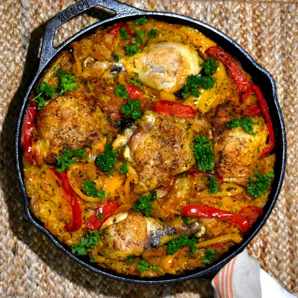

Chicken Jollof Rice

Colorful and tasty one pot meal from West Africa. Simple preparation, then in the oven it goes.
2 tbspcooking oil6chicken pieces (legs and/or thighs)1onion, diced2bell peppers (mix of colors), sliced5cloves garlic, minced1 tbspchopped ginger1 cuptomato sauce1 tbspdried thyme1 tbspcurry powder2scotch bonnet or habanero peppers, chopped with seeds removed- salt and pepper, to taste
2 cupsbasmati rice3 cupschicken broth2bay leaves
Preheat oven to 350°F.
Heat oil in a cast iron skillet, or other oven safe pan, over medium-high heat.
Season chicken with salt and pepper and place in pan. Brown 4-5 minutes per side until golden brown. Remove and set aside.
Add onions and peppers to the same pan, cook until soft.
Add garlic and ginger, stir and cook 1 minute.
Stir in tomato sauce, thyme, curry powder, chopped scotch bonnet peppers, salt and pepper. Once well mixed, add rice and stir well.
Pour in chicken broth, stir, then place chicken pieces in the pan. Add in bay leaves.
Cover pan with foil. Place in preheated oven and bake for 1 hour. Check that the rice is cooked, then allow the dish to rest for 5 minutes. Fluff rice with a fork, then serve.